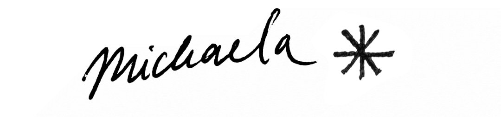

I am an aspiring language scientist with an interest in the aspects of language that seem redundant but are nevertheless recognized by speakers as carrying nuances in interpretation. Since my BA, I have worked on topics at the syntax-semantics-pragmatics interface, especially on particles and negation in polar questions in Czech and Asante Twi, using corpus, experimental, and fieldwork methods.
Currently, I am employed as a PhD student at the University of Konstanz, under the supervision of Maribel Romero. In the SFB 1760 Silence, Noise and Signal in Language, we are working towards explaining expletive negation – negation seemingly without contributing negative import – across different languages and environments!
My secondary education and prior work experience outside academia have been in graphic design and typography. I maintain an interest in bringing this perspective into applied linguistic research on dyslexia with the eventual goal of improving accessibility (more on that very soon!).
Check out my work on Google Scholar, ResearchGate and BlueSky!
